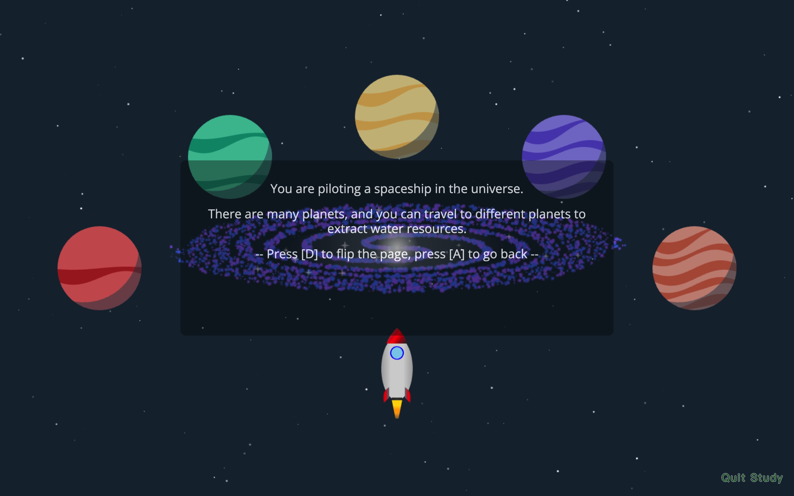
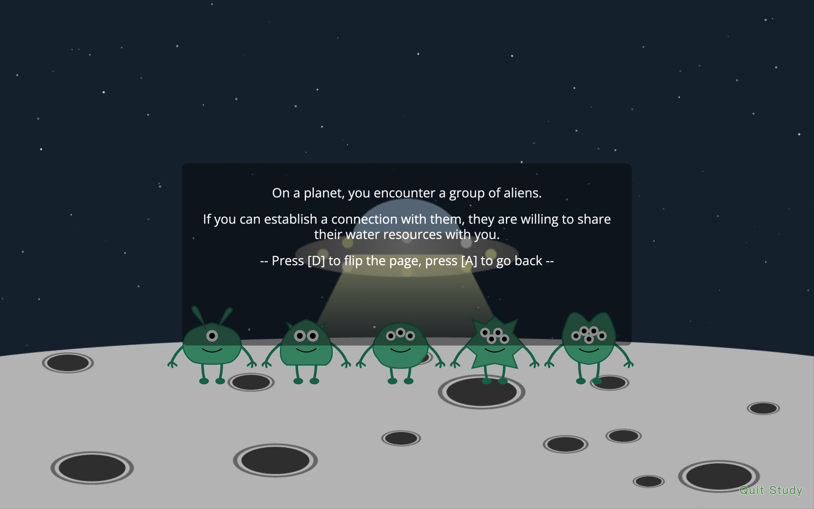
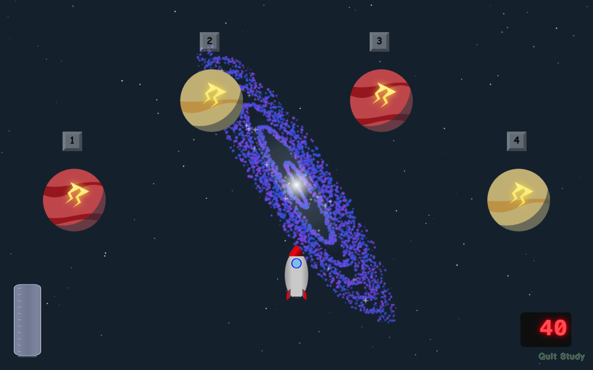
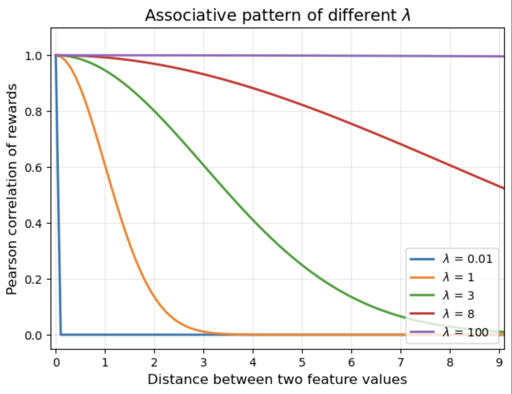
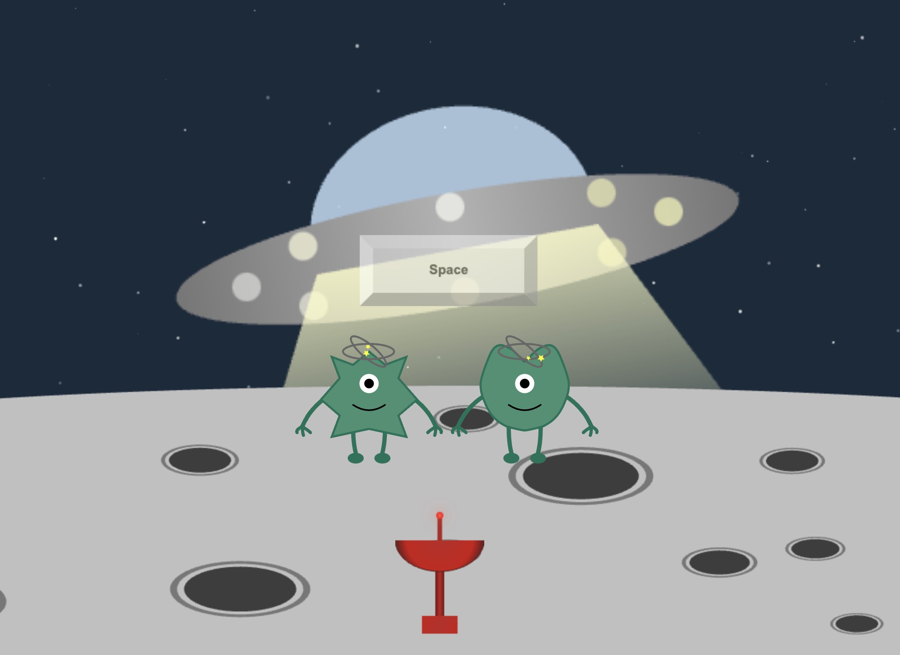
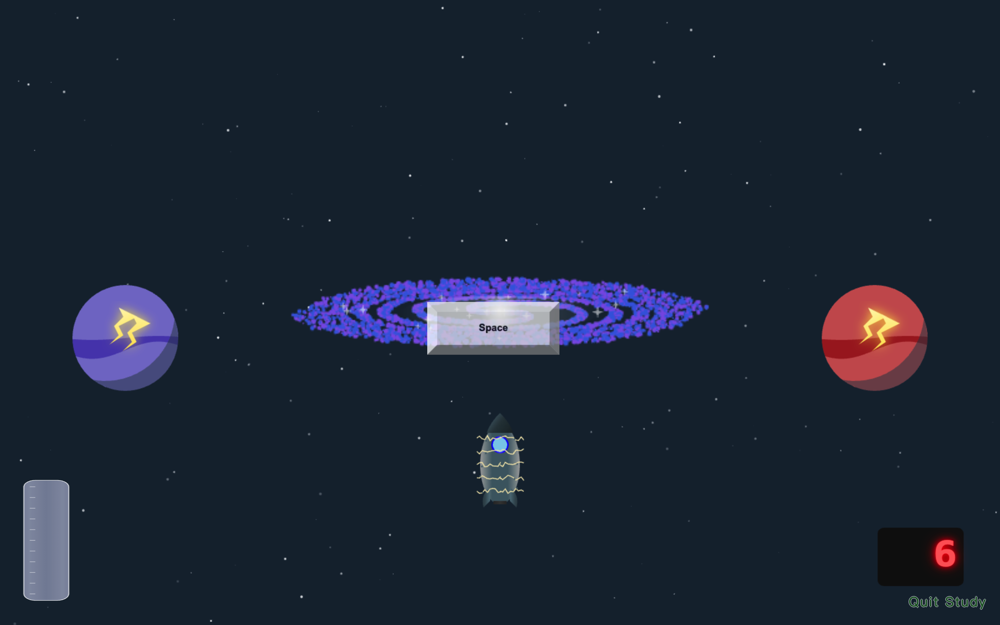

Integrative Bandit
1 Basic Configuration
1.1 Overview
In this section, we will go through some basic attributes of bandit task.
1.2 Conceptual Introduction
NUM_TRIALS: Number of trialsNUM_ARMS: Number of armsCOVER_STORY: Cover story of the tasksocial: Alien communicationnonsocial: Planet travel
REWARD_TYPE: Type of rewardnumeric: Reward is an integer between 0 and 100 (inclusive), drawn from a Gaussian distribution, whose mean is given by the reward matrix.binary: Reward is either 0 or 1, following a Bernoulli distribution. Reward probability is given by the reward matrix.
FEEDBACK: (removed from the current version) How to provide feedback in a trialcontingent: Feedback is given only for the chosen armfull: Feedback is given for every arm whether it is chosen or not
1.3 Setup in JATOS
{
"TASK": "multi-arm bandit",
"NUM_TRIALS": 40,
"NUM_ARMS": 4,
"COVER_STORY": "nonsocial",
"REWARD_TYPE": "binary",
"blockMessage": ["In this session, Some options yield more rewards than others."]
}Here, we set a multi-arm bandit task with 40 trials and 4 arms. The cover story is nonsocial, collecting water from planets. The reward type is binary.
The block message is displayed at the beginning of block.
2 Feature Configuration
2.1 Overview
In this section, we will discuss the features in bandit tasks.
Features help agents distinguish different contexts and arms, facilitating learning.
The setup determines how features are allocated across trials or arms, which is critical for stimuli presentation and reward generation.
2.2 Conceptual Introduction
2.2.1 Feature Type
Features can be either trial-based or arm-based:
- Trial-based feature: Features that vary across trials, distinguishing different circumstances.
- Arm-based feature: Features vary among arms, distinguishing different options.
In our (nonsocial/social) task, there is one trial-based feature, context (galaxy/spaceship).
There are two arm-based features, armCategorical (color of planets/shape of aliens) and armOrdered (number of stripes on planets/number of eyes on aliens).


2.2.2 Values of Feature
Each feature can take multiple values.
These values describe all possible instances of the feature that participants may encounter during the experiment.
Trial is the default trial-based feature, with values corresponding to trial indices that increment as the experiment progresses.
Arm is the default arm-based feature, with values corresponding to arm indices that increase from left to right.
 In this example, color (2 values) and numberStripe (2 values) distinguish planets (arms), making them arm-based features along with the arm index arm (4 values).
galaxy (3 values, totally 3 states) distinguishes contexts, making it a trial-based feature along with the trial index trial (40 values, totally 40 trials).
2.2.3 Feature Allocation
The feature values are randomly assigned with even proportion, e.g., 1 3 2 2 1 3.
Except for the default features Trial and Arm, values are allocated in ascending order.
To facilitate reward matrix generation, the allocation of a feature is represented as an one-hot encoding matrix.
The rows of the matrix correspond to the number of trials or arms, and the columns correspond to the number of feature values.
For example, let’s say there are 5 trials. A trial-based feature galaxy takes three values: vertical ellipse, circle, horizontal ellipse. Then the corresponding allocation matrix could be:
According to the matrix, in the 1st and 5th trial, the galaxy is vertical ellipse; in the 2nd trial, the galaxy is circle; in the 3rd and 4th trial, the galaxy is horizontal ellipse.
2.3 Setup in JATOS
{
"allVarInfo": {
"context": {
"name": "context", # in nonsocial story, galaxy
"type": "trial", # trial-based feature
"numberLevels": 3
},
"armCategorical": {
"name": "armCategorical", # color
"type": "arm", # arm-based feature
"numberLevels": 2
},
"armOrdered": {
"name": "armOrdered", # number of stripes
"type": "arm",
"numberLevels": 2
}
},
}Here, we set an environment with 3 states of galaxy. Planets have 2 colors and 1~2 stripes.
Default features (trial, arm) will be automatically set up according to NUM_TRIALS and NUM_ARMS.
3 Reward Configuration
3.1 Overview
In this section, we will discuss the reward structure in bandit tasks.
The setup generate a reward matrix based on trial-based and arm-based features.
3.2 Conceptual Introduction
3.2.1 Reward Matrix
The reward structure is described by the reward matrix.
The rows of the matrix correspond to the number of trials, and the columns correspond to the number of arms.
The value in each cell represents the expected reward for selecting the corresponding arm in the corresponding trial.
- for
numericreward, the reward follows a \(Gaussian\) distribution. The value represents the reward mean.
- for
binaryreward, the reward follows a \(Bernoulli\) distribution. The value represents the reward probability.
All calculations of the reward matrix in the following sections are based on the scale of 0~100. When reward type is binary, the calculated matrix will be scaled to 0~1.
For instance, a numeric reward matrix may look like this:
\[
\begin{bmatrix}
1 & 2 & 3 \\
4 & 5 & 6 \\
7 & 8 & 9 \\
10 & 11 & 12 \\
13 & 14 & 15 \\
\end{bmatrix}
\] It has the shape of 5 (number of trials) ×3 (number of arms).
Each cell indicates the expected reward of drawing a specific arm in a specific trial.
For example, in the second trial, the third arm has the expected reward of 6: \(E[R|T=2, A=3] = 6\).
3.2.2 Decompose Reward Matrix
The overall reward matrix determines the expected reward for each trial and arm combination.
As described previously, there are trial-based features across trials and arm-based features among arms.
Those features independently or jointly contribute to the expected reward.
The overall reward matrix can be decomposed into component matrices based on individual features or their combinations.
To avoid complexity, when it comes to the feature combination, we only consider the combination of one trial-based feature and one arm-based feature.
Suppose there are two arm-based features: color and numberStripe.
Each feature independently contributes to the reward (e.g., red planets yields higher rewards than orange planets, and planets with more stripes yield higher rewards). Then the reward matrix is:
\[
R = \frac{R_{\text{color}} + R_{\text{numberStripe}}}{2}
\]
Here, \(R_{\text{color}}\) and \(R_{\text{numberStripe}}\) are two independent component matrices describing the contribution of color and numberStripe to the expected reward.
3.2.3 Component Matrix
A component matrix describes the unique contribution of a specific feature or a combination of features to the expected reward.
It has the same shape as the overall reward matrix, with rows corresponding to the number of trials and columns corresponding to the number of arms.
The value in each cell represents the expected reward for drawing a specific arm in a specific trial, when only considering the certain feature or combination.
How a feature or combination contributes to the overall reward matrix can be understood by specifying two things:
- Feature allocation: How the feature values are distributed across trials and arms, has been covered in allocation matrix.
- Feature-to-reward mapping: How much reward each feature (combination) value provides, will be covered in mapping matrix.
The component matrix for a feature (or combination) is generated through matrix multiplication.
For feature combination: \[
R_{trialFeature, armFeature} = A_{\text{trialFeature}} \cdot M_{\text{trialFeature,armFeature}} \cdot A_{\text{armFeature}}^T
\]
where:
- \(R_{trialFeature, armFeature}\): Component matrix of the feature combination, describing its unique contribution to the overall expected reward matrix.
- \(A_{\text{trialFeature}}\): Allocation matrix of the trial-based feature across trials.
- \(M_{\text{trialFeature,armFeature}}\): Mapping matrix, describing the expected reward for each value pair of trial-based feature and arm-based feature.
- \(A_{\text{armFeature}}^T\): Transposed allocation matrix of the arm-based feature.
For single feature, the component matrix is constructed by using the default feature of the missing dimension:
- When considering the independent contribution of an arm-based feature, the trial dimension will take the default feature
trial. \[ R_{armFeature} = A_{\text{trial}} \cdot M_{\text{trial,armFeature}} \cdot A_{\text{armtFeature}}^T \]
- Similarly, for a trial-based feature, the arm dimension will take the default feature
arm. \[ R_{trialFeature} = A_{\text{trialFeature}} \cdot M_{\text{trialFeature,arm}} \cdot A_{\text{arm}}^T \]
For instance, let’s say there are 5 trials and 4 arms.
Context feature galaxy takes three values, vertical ellipse, circle, horizontal ellipse.
Arm feature color takes two values, red, orange.
The allocation matrix of galaxy \(A_{galaxy}\) is: \[
\begin{bmatrix}
1 & 0 & 0 \\
0 & 1 & 0 \\
0 & 0 & 1 \\
1 & 0 & 0 \\
0 & 1 & 0 \\
\end{bmatrix}
\] The allocation matrix of color \(A_{color}\) is: \[
\begin{bmatrix}
0 & 1 \\
1 & 0 \\
1 & 0 \\
0 & 1 \\
\end{bmatrix}
\] Assume the mapping matrix for galaxy-color pair \(M_{galaxy, color}\) is: \[
\begin{bmatrix}
3 & 2 \\
1 & 2 \\
2 & 2 \\
\end{bmatrix}
\] The mapping matrix specifies the expected rewards for traveling to planets with specific colors given specific galaxy states.
For example, \(M_{2,1}=1\), means that when observing the circle galaxy, the expected reward of traveling to a red planet is 1.
The component matrix for the combination of galaxy and color \(R_{galaxy, color}\) can be then calculated as: \[
R_{galaxy, color} = A_{galaxy} \cdot M_{galaxy, color} \cdot A_{color}^T
\]
\[
\begin{bmatrix}
2 & 3 & 3 & 2\\
2 & 1 & 1 & 2\\
2 & 2 & 2 & 2\\
2 & 3 & 3 & 2\\
2 & 1 & 1 & 2\\
\end{bmatrix}
=
\begin{bmatrix}
1 & 0 & 0 \\
0 & 1 & 0 \\
0 & 0 & 1 \\
1 & 0 & 0 \\
0 & 1 & 0
\end{bmatrix}
\cdot
\begin{bmatrix}
3 & 2 \\
1 & 2 \\
2 & 2 \\
\end{bmatrix}
\cdot
\begin{bmatrix}
0 & 1 \\
1 & 0 \\
1 & 0 \\
0 & 1
\end{bmatrix}^T
\]
The resulting matrix \(R_{galaxy, color}\) describes the expected reward for selecting a specific arm in a specific trial, when only considering the galaxy-color feature pair.
For example, \(R_{4,3}=3\), means that when choosing the third arm in the fourth trial, the galaxy-color feature pair contributes 3 to the overall expected reward.
3.2.4 Mapping Matrix
The mapping matrix specifies the expected reward for each combination of trial-based and arm-based feature values.
Its rows correspond to the number of trial-based feature values, and columns correspond to the number of arm-based feature values.
The value in each cell represents the expected reward for a specific trial-arm feature pair.
The mapping matrix is determined by the mapping function and mapping structure.
3.2.4.1 Mapping Function
Considering one feature, different feature values can be mapped to expected rewards in the following ways:
1. identical: All feature values share the same reward.
2. independent: Rewards for feature values are independently different.
3. smooth(only for ordered feature): Rewards vary across feature values in a predictable way (Closer feature values have similar rewards).
Mathematically, three types of mapping modes can be described by the unified format of Gaussian process. The key parameter is the generalization parameter \(\lambda\). \[k(x_i, x_j) = \exp(-\frac{(x_i - x_j)^2}{\lambda})\] where \(k(x_i, x_j)\) is the correlation between rewards at feature values \(x_i\) and \(x_j\).
- For identical mapping: \(\lambda \to \infty\), resulting in perfect correlation between any two feature values.
- For independent mapping: \(\lambda \to 0\), resulting in zero correlation between any two feature values.
- For smooth mapping: \(\lambda\) takes a finite positive value (e.g. 5), resulting in correlation that decays with distance between feature values.

By default, sequence samplings are around 50 (the midpoint of 0 and 100).
We can also change level to change the center of Gaussian process sampling: low = 25, medium = 50, high = 75.
3.2.4.2 Mapping Structure
Features may contribute to the overall reward independently or jointly.
Since we only consider the combination of one trial-based feature and one arm-based feature, there are four possible mapping dependencies:
- Independent mapping:
arm_only: Rewards only depend on arm feature values.
trial_only: Rewards only depend on trial feature values.
- Joint mapping:
arm_on_trial: Rewards depend on arm feature values, but the mapping varies across trial feature values.
trial_on_arm: Rewards depend on trial feature values, but the mapping varies across arm feature values.
The mapping matrix has rows corresponding to trial-based feature values, and columns corresponding to arm-based feature values.
For independent mapping, arm_only or context_only, a broadcasting mechanism is used:
One GP sequence is sampled for all values of that feature, and the resulting sequence is repeated along the default feature of the other dimension.
For joint mapping, arm_on_context or context_on_arm, a seeding mechanism is used:
Sampling a GP sequence for all values of the primary (conditioned) feature, while applying independent random seeds across different values of the secondary (conditioning) feature.
Consider a task with 5 trials and 4 arms of 3 colors.
If we want rewards to be independent across colors, then feature color takes independent mapping function and arm_only mapping structure.
The mapping matrix \(M_{color}\) might be: \[
\begin{bmatrix}
81 & 35 & 42 \\
81 & 35 & 42 \\
81 & 35 & 42 \\
81 & 35 & 42 \\
81 & 35 & 42 \\
\end{bmatrix}
\] 5 rows for 5 trials, 3 columns for 3 colors.
For different colors, the rewards are independently different.
Across trials, the rewards of each color are consistent.
Let’s say, we want rewards across trials to be associated, while different colors exhibit different associative patterns.
In that case, trial- color pair takes smooth mapping function and context_on_arm mapping structure.
Then the mapping matrix might be: \[
\begin{bmatrix}
59 & 42 & 33 \\
48 & 43 & 44 \\
37 & 44 & 55 \\
26 & 45 & 34 \\
15 & 46 & 23 \\
\end{bmatrix}
\] 5 rows for 5 trials, 3 columns for 3 colors.
For each color, the rewards change across trials smoothly.
For different colors, the change pattern varies.
3.3 Setup in JATOS
Example 1: Color-based Stationary Bandit
{
"allRewardInfo": [
{
"mappingStructure": [
"arm" # mapping structure: arm_only
],
"mappingFunction": {
"generalization": "independent", # mapping function: independent
"level": "medium" # sampling acround medium level (50)
},
"primaryFeature": "armCategorical", # primary feature: armCategorical
"secondaryFeature": "" # no secondary feature since it's arm_only
}
],
}The reward independently changes between armCategorical values, but the mapping is the consistent across contexts and trials.
For example, red arm yields 81, and orange arm yields 35, no matter what galaxy or trial it is.
Example 2: Color-dependent Non-stationary Bandit
{
"allRewardInfo": [
{
"mappingStructure": [
"trial",
"arm" # mapping structure: trial_on_arm
],
"mappingFunction": {
"generalization": "smooth", # mapping function: smooth
"level": "medium" # sampling acround medium level (50)
},
"primaryFeature": "trial", # primary feature: trial
"secondaryFeature": "armCategorical" # secondary feature: armCategorical, color
}
],
}For each armCategorical (color), the reward change smoothly across trial values; while different armCategorical (color) values have independent mappings across trial values.
For example, for the red planet, its reward smoothly decreases from 59 to 15 across trials; for the orange planet, its reward smoothly increases from 42 to 46 across trials.
Example 3: Complex Reward Matrix
We can also set up a complex reward matrix with multiple mapping information:
{
"allRewardInfo": [ # a list of mapping info
{ #first mapping info
...
},
{ #second mapping info
...
}
],
}In this case, the reward matrix is the average of the two component matrices.
4 Manipulation configuration
4.1 Overview
In this section, we will go through two non-reward decision factors.
Those factors will influence decision-making in bandit task, but not directly through the reward matrix.
4.2 Conceptual Introduction
4.2.1 Noise
Noise: (Gershman, 2018, only available for numeric reward type) is manipulated through the variance level of the reward generation process. Larger variance means more noise.
There are four possible modes.
none: \(\sigma = 0\) for each armlow: \(\sigma = 10\) for each armhigh: \(\sigma = 20\) for each armdifferent: \(\sigma\) is different for each arm.
When the mode is different:
- Group the arms based on the average reward value.
- Randomly assign different levels (0,10,20) to arms with similar reward levels.
This grouping and allocation method ensures that each reward level has approximately equal quantities of each noise level.
4.2.2 Information
Information: (Wilson et al., 2014) is manipulated through the number of forced choices. Being chosen more brings more information.
There are four possible modes:
none: No forced choice for each arm.low: 1 forced choice for each arm.high: 3 forced choices for each arm.different: Different forced choices for each arm.
When the mode is different, the implementation is similar to the noise manipulation.
Additionally, for forced choice, the program will sample multiple times to ensure the total number of forced choice is less than the total trial number NUM_TRIALS.
In social/nonsocial games:
- Noise is depicted as the dizziness of aliens/lightning on a planet. More symbols means higher noise level.
- Information is achieved through forced choices, where players press the spacebar for system-determined selection. The cover story is described as radar overload/the spaceship experiencing a magnetic field.


4.3 Setup in JATOS
{
"forcedChoiceMode": "different",
"noiseMode": "low",
}Here, we set the forced choice count for different arms to be different, and the noise level to be low for all arms (\(\sigma = 10\)).